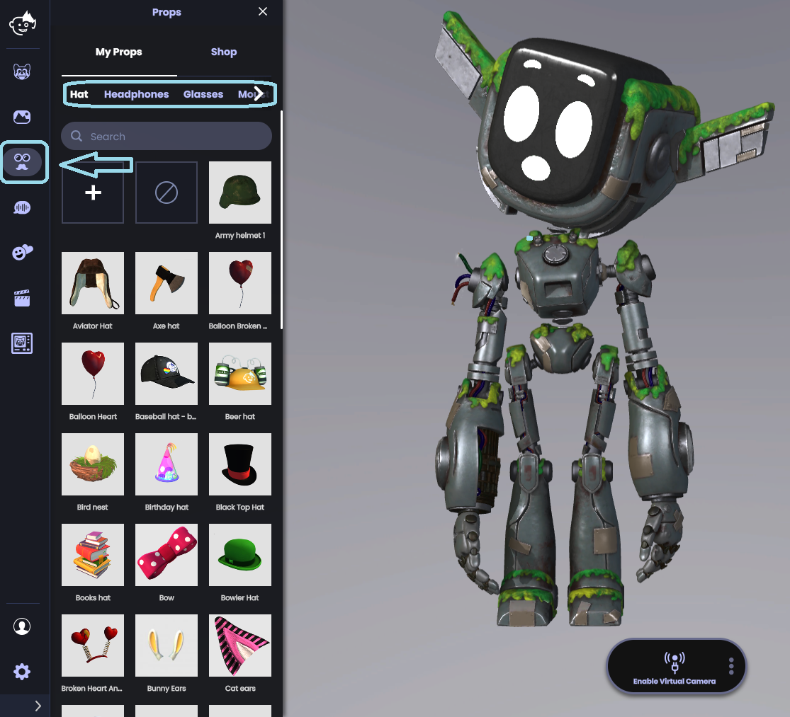
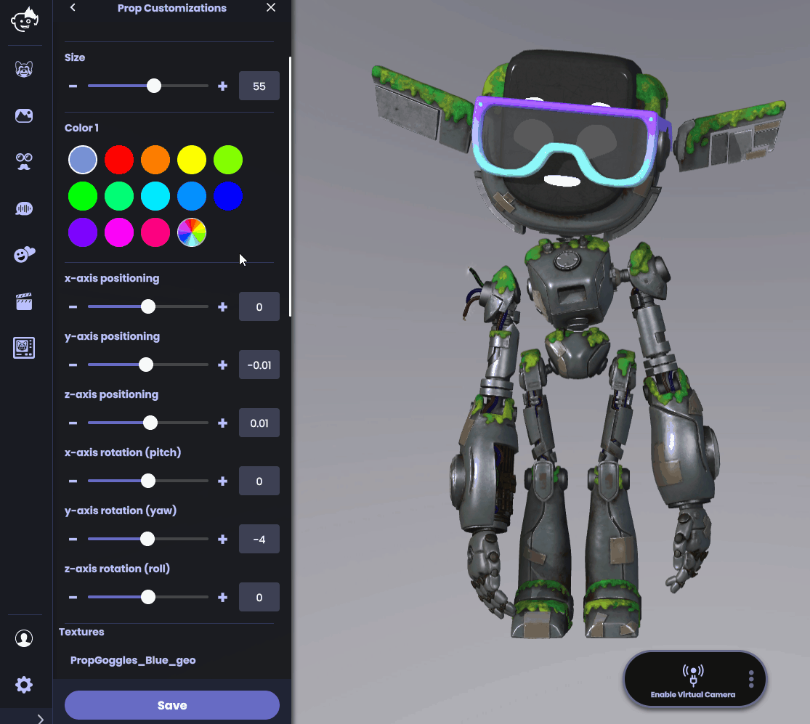
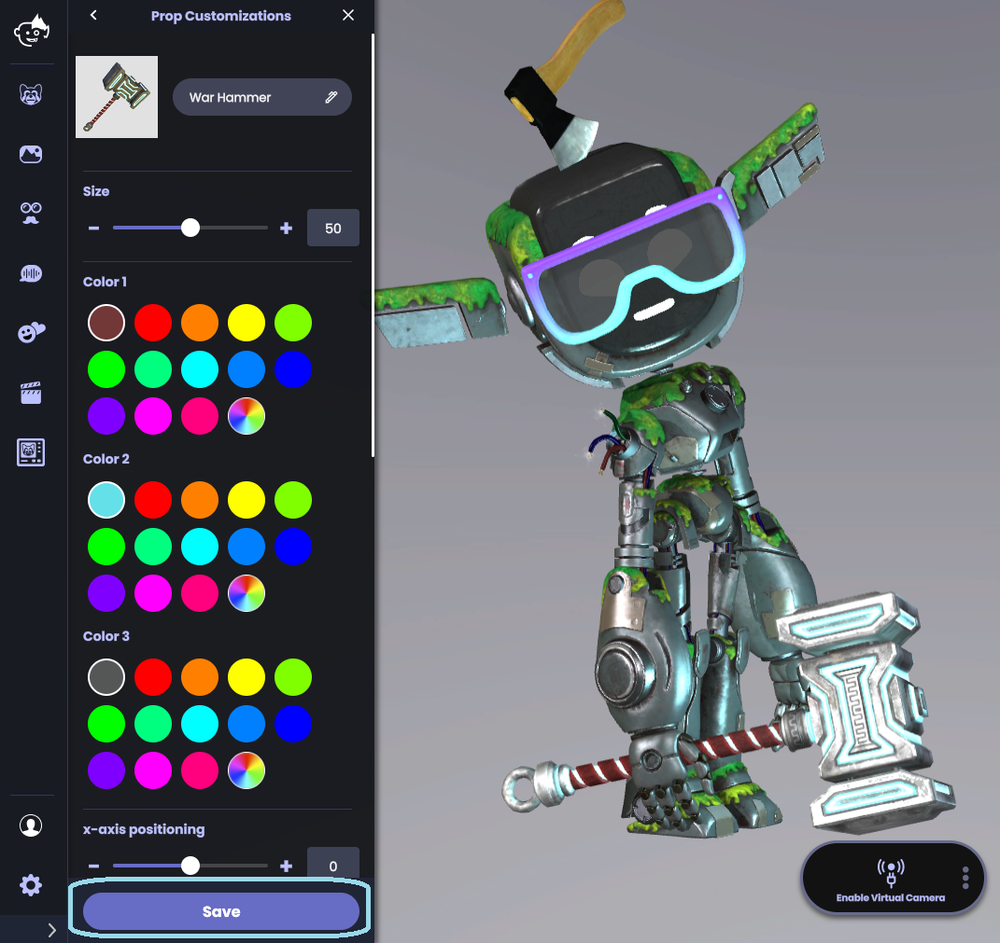
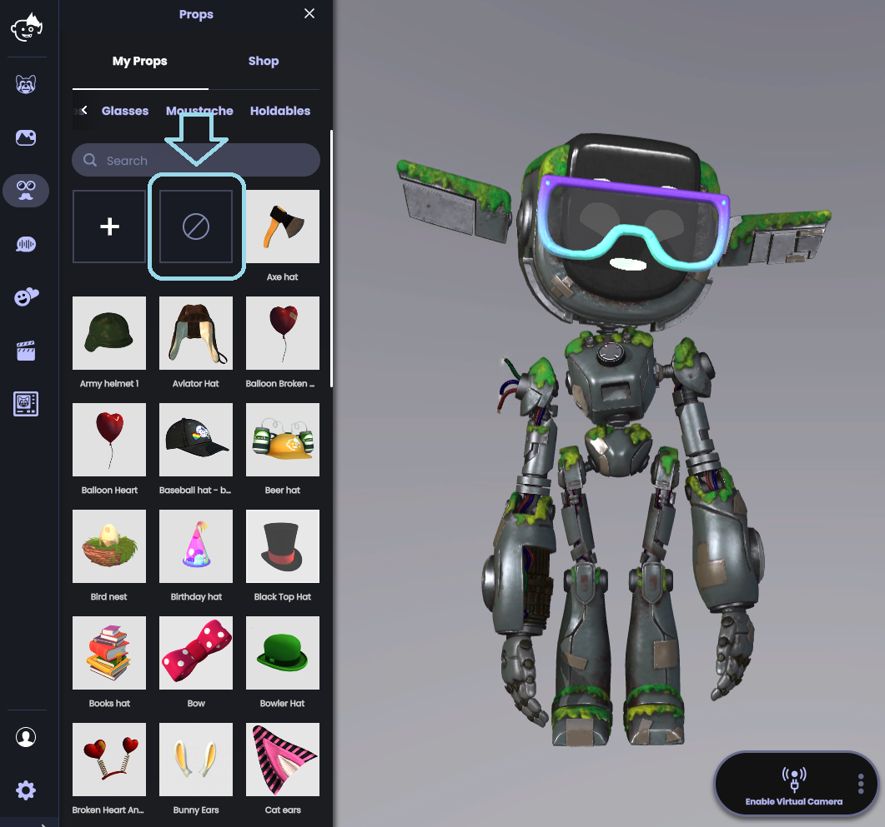

小道具を使用するにはどうすればよいですか？
Animazeでは、帽子、眼鏡、ヒゲなどの3Dとハイブリッドアバターに装着するカスタマイズ可能なたくさんの小道具を使用できます。次の手順でアバターに小道具を適用します:
1.左メニューの「小道具」ボタンをクリックします
2.小道具ドロワーが開きます。ドロワーには、カテゴリーごとに分けられたアイテムが入っています：帽子、ヘッドホン、眼鏡、ヒゲ、握れる物

3.小道具をクリックしてアバターに適用します。小道具を完璧に付加するために、サイズと座標軸のスライダーを使用します。小道具の色とテクスチャーをカスタムして、小道具を目立たてましょう（テクスチャーの変更方法は下記を参照）

4.調整が終わったら「保存」をクリックして、カスタマイズした小道具をアバターに適用します

カスタムテクスチャーの追加方法について詳しくは、小道具のテクスチャーの変更のFAQを参照してください。
やっぱりアバターに小道具を使用したくないと思った場合は、ボタンをクリックして全てキャンセルすることが可能です：
